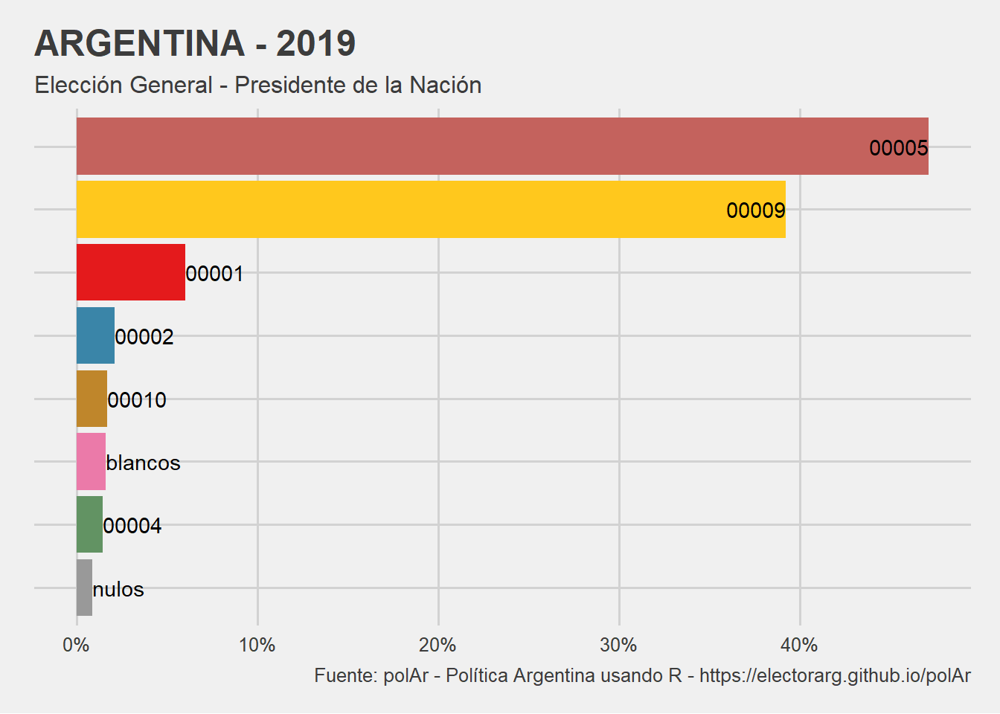
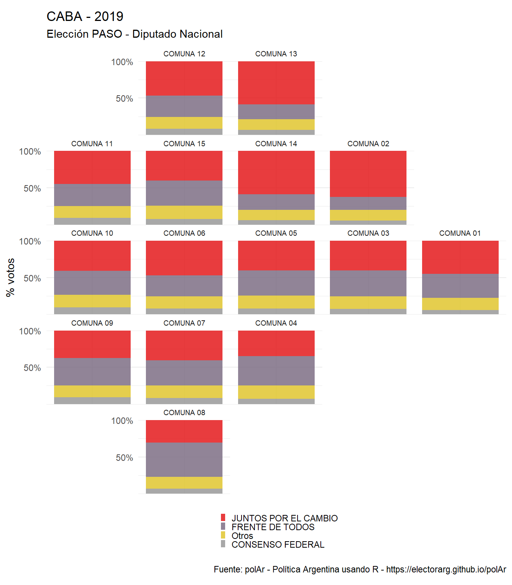
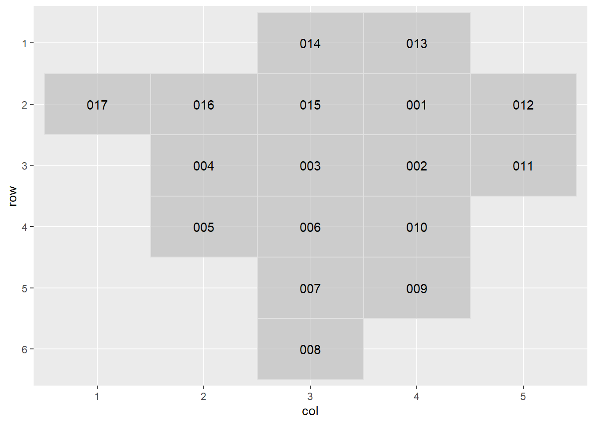

# A tibble: 426 × 5
district category round year NOMBRE
<chr> <chr> <chr> <chr> <chr>
1 arg presi balota 2015 ARGENTINA
2 arg presi gral 2003 ARGENTINA
3 arg presi gral 2007 ARGENTINA
4 arg presi gral 2011 ARGENTINA
5 arg presi gral 2015 ARGENTINA
6 arg presi gral 2019 ARGENTINA
7 arg presi paso 2011 ARGENTINA
8 arg presi paso 2015 ARGENTINA
9 arg presi paso 2019 ARGENTINA
10 caba dip gral 2005 CABA
# ℹ 416 more rowsPublicaron en CRAN una primera versión del paquete polAr: -POLítica ARgentina usando R. En este post intentaré detallar un poco más el proceso de trabajo con el que llegamos hasta acá y, como yapa, el de geofaceteAr.
polAr
La idea del paquete es brindar herramientas que faciliten el flujo de trabajo del análisis político - electoral y el acceso a datos de Argentina usando R. Podriamos dividir las funciones de esta primera versión en tres familias: (i) datos, (ii) indicadores y (iii) visualización:
datos
El paquete no incluye datos, sino que funciona como motor de búsqueda y descarga desde un repositorio alternativo. La idea detrás de ello es que funcione de modo indpendiente, que ésta pudiera ser aumentada o modificada sin efectos directos sobre el paquete. En una próxima publicación intetnaré avanzar sobre la documentación de este repositorio y un proceo de chequeo de información.
La principal fuente de información es el siempre útil Atlas Electoral de Andy Tow. Sitio que, además de ser la fuente de tabulados electorales más completa que existe en Argentina, disponibiliza las bases con los datos desagregados publicados por los escrutinios provisorios desde el año 2003 en adelante.
El primer paso de lo acá compartido fue el procesamiento de esas bases de datos y el armado de un repositorio propio que me facilitara el trabajo de llamado de elecciones. En resumen: transformamos archivos .mdb (formato para tablas relacionles de Microsoft Acces) en sqlite para cada año electoral e hicimos consultas a esas basese de datos para obtener un archivo .csv para cada elección con una estrcutura así: distrito_categoria_turno_año.csv.
Solo para las elecciones del proceso electoral de 2019 trabajamos con datos compartidos por pmoracho en github. Algo más de detalle del estado actual de todo esto esta disponible en el repositorio PolAr_Data.
Al día de hoy el repositorio cuenta con 425 archvios de elecciones para las catgorías a Presidente, Diputades y Senadores Nacionales, para elecciones generales, primarias (P.A.S.O.) y balotaje presidencial.
Con show_available_elections() accedemos a un índice con la información disponible que podemos descargar:
Tomando los parámetros de la tabla anterior con el siguiente comando podemos completar los campos obligatorios para obtener los datos, en este caso de la elección general para presidente de 2019.
arg19 <- get_election_data(district = "arg",
category = "presi",
round = "gral",
year = 2019)
arg19# A tibble: 192 × 8
# Groups: codprov [24]
category round year codprov name_prov electores listas votos
<chr> <chr> <dbl> <chr> <chr> <dbl> <chr> <dbl>
1 presi gral 2019 01 CABA 2562670 00010 13662
2 presi gral 2019 01 CABA 2562670 00002 58652
3 presi gral 2019 01 CABA 2562670 00009 1051116
4 presi gral 2019 01 CABA 2562670 00005 714820
5 presi gral 2019 01 CABA 2562670 00001 129933
6 presi gral 2019 01 CABA 2562670 00004 37765
7 presi gral 2019 01 CABA 2562670 blancos 30994
8 presi gral 2019 01 CABA 2562670 nulos 14986
9 presi gral 2019 02 BUENOS AIRES 12504537 00010 149613
10 presi gral 2019 02 BUENOS AIRES 12504537 00002 272846
# ℹ 182 more rowsarg19 es un tibble de \(192\) filas y 8 variables. Las filas son el producto de 8 filas únicas por provincia (los 24 grupos) con la cantidad de votos obtenidos por las distintas opciones electorales en este turno, categoría y año.
En este artículo se puede encontrar más detalles de la función.
indicadores
El acceso a la información es quizás la función princiapl de polAr, la cual permitirá a usuaries trabajar con los datos como quieran. Pero el paquete incopora además funciones para realizar cálculos de interés para el análisis político. Esta primera versión solamente incluye dos varianes: compute_nep(), que devulelve el Número Efectivo de Partidos (según dos fórmulas distintas) y compute_cometitiveness(), que calcula el nivel de competencia de una elección determinada.
arg19 %>%
compute_competitiveness() %>%
print(n= 24)# A tibble: 24 × 5
codprov competitividad year category round
<chr> <dbl> <dbl> <chr> <chr>
1 01 0.836 2019 presi gral
2 02 0.839 2019 presi gral
3 03 0.790 2019 presi gral
4 04 0.689 2019 presi gral
5 05 0.909 2019 presi gral
6 06 0.801 2019 presi gral
7 07 0.778 2019 presi gral
8 08 0.999 2019 presi gral
9 09 0.637 2019 presi gral
10 10 0.954 2019 presi gral
11 11 0.878 2019 presi gral
12 12 0.977 2019 presi gral
13 13 0.881 2019 presi gral
14 14 0.767 2019 presi gral
15 15 0.900 2019 presi gral
16 16 0.725 2019 presi gral
17 17 0.862 2019 presi gral
18 18 0.825 2019 presi gral
19 19 0.967 2019 presi gral
20 20 0.696 2019 presi gral
21 21 0.993 2019 presi gral
22 22 0.442 2019 presi gral
23 23 0.765 2019 presi gral
24 24 0.701 2019 presi gral Este artículo del paquete tiene algo más de detalle.
visualización
Por último polAr incluye un par funciones que ayudan a visualizar rápidamente las elecciones de manera resumida. Una primera alternativa es generar tabulados con los resultados agregados de un comicio:
arg19 %>%
get_names() %>%
tabulate_results()| Argentina - 2019 | |
| Elección General - Presidente de la Nación | |
| Lista | Votos |
|---|---|
| blancos | 64.4% |
| nulos | 35.6% |
| Fuente: polArverse - https://politicaargentina.github.io/electorAr | |
Otra alternativa es analizarlos de manera gráfica1:
arg19 %>%
get_names() %>%
plot_results(national = T)
Ambas funciones requieren utilizar primero get_names en la versión de CRAN. Esta es una función auxiliar para vincular la base de datos de resultados con los nombres de las listas que compiten.
La versión en desarrollo elimina ese paso intermedio para los casos por defecto de obtención de datos (con fomato long) pero sigue funcionando para los casos en que los datos de la elección fueron descargados wide.
Puede notarse que plot_results() fue llamado con un parámatro national = TRUE. De esta manera, para elecciones a presidente, el gráfico resultante muestra el agregado de votos al nivel del distrito que se elige el cargo. Si, en cambio, no especificamos nada, el parámetro FALSE por defecto nos devolverá los resultados a nivel de provncias en grillas cómo si fueran mapas. De igual modo, si descargamos una elección a nivel departamental, plot_results()automáticamente graficará los resultados con geofacetAR.
get_election_data(district = "caba",
category = "dip",
round = "paso" ,
year = 2019 ,
level = "departamento") %>%
plot_results()
RESUMIENDO
gofaceteAr

Lo anterior es posible gracias a otro paquete, disponible para descarga desde un repositorio de github. geofaceteAr es una extensión local del paquete geofacet de Ryan Haffen. El empaquetado fue el resultado de ordenar la aplicación para Argentina de esta técnica de acomodar las grillas de ggplot2 como si fueran mapas, originalmente presentadas en LatinR 2018.
Éste carga el paquete geofacet y agrega funciones de utilidad para la geografía argentina. La priemra de ellas es show_arg_codes()que muestra un diccionario de grillas con el id correspondiente para descarga y equivalencias de los id correspodientes a los diferentes distritos.
# A tibble: 26 × 5
id codprov codprov_censo codprov_iso name_iso
<chr> <chr> <chr> <chr> <chr>
1 ARGENTINA " " " " AR Argentina
2 CABA "01" "02" AR-C Ciudad Autónoma de Buenos Air…
3 BUENOS AIRES "02" "06" AR-B Buenos Aires
4 CATAMARCA "03" "10" AR-K Catamarca
5 CORDOBA "04" "14" AR-X Córdoba
6 CORRIENTES "05" "18" AR-W Corrientes
7 CHACO "06" "22" AR-H Chaco
8 CHUBUT "07" "26" AR-U Chubut
9 ENTRE RIOS "08" "30" AR-E Entre Ríos
10 FORMOSA "09" "34" AR-P Formosa
# ℹ 16 more rowslibrary(geofaceteAR)
show_arg_codes()Usamos la función get_grid() para llamar una grilla disponible en la tabla anterior. Y grid_preview() si queremos ver el diseño de la grilla.
get_grid("TUCUMAN") name_provincia name row col code
1 TUCUMAN BURRUYACU 1 4 013
2 TUCUMAN CAPITAL 2 4 001
3 TUCUMAN CHICLIGASTA 4 2 005
4 TUCUMAN CRUZ ALTA 2 5 012
5 TUCUMAN FAMAILLA 3 3 003
6 TUCUMAN GRANEROS 5 4 009
7 TUCUMAN JUAN B. ALBERDI 5 3 007
8 TUCUMAN LA COCHA 6 3 008
9 TUCUMAN LEALES 3 5 011
10 TUCUMAN LULES 3 4 002
11 TUCUMAN MONTEROS 3 2 004
12 TUCUMAN RIO CHICO 4 3 006
13 TUCUMAN SIMOCA 4 4 010
14 TUCUMAN TAFI DEL VALLE 2 1 017
15 TUCUMAN TAFI VIEJO 2 2 016
16 TUCUMAN TRANCAS 1 3 014
17 TUCUMAN YERBA BUENA 2 3 015
Luego, podemos hacer uso nuevamente de la información en nuestro diccionario de identificadores geográficos para recodificar los distritos. El código por default - el que figura dentro de cada cajita del mapa- es el correspondiente a los escrutinios provisorios (que utilizamos en polAr), pero podemos disponer de otros. Por ejemplo, los del INDEC:
get_grid("TUCUMAN") %>%
recode_grid(type = "indec")# A tibble: 17 × 4
name row col code
<chr> <dbl> <dbl> <chr>
1 BURRUYACU 1 4 007
2 CAPITAL 2 4 084
3 CHICLIGASTA 4 2 021
4 CRUZ ALTA 2 5 014
5 FAMAILLA 3 3 028
6 GRANEROS 5 4 035
7 JUAN B. ALBERDI 5 3 042
8 LA COCHA 6 3 049
9 LEALES 3 5 056
10 LULES 3 4 063
11 MONTEROS 3 2 070
12 RIO CHICO 4 3 077
13 SIMOCA 4 4 091
14 TAFI DEL VALLE 2 1 098
15 TAFI VIEJO 2 2 105
16 TRANCAS 1 3 112
17 YERBA BUENA 2 3 119 Hasta acá llegamos con la primera entrada respecto de {polAr} ya formalmente en CRAN. Espero en una próxima entrada contar un poco más del repositorio de datos y la incorporación de nuevas funciones en la versión de desarrollo.
Footnotes
Inspirados en
ggplotmede Juan Cruz Rodrígurez con Camila Higa - mentaComunicación- trabajamos en un bot de Twitter que permite consultar resultados de elecciones. La idea es que un usuario le pregunta a@pol_ar_botsobre una elección, cumpliendo con los parámetros necesarios (distrito+turno+año+categoria) y el bot responde graficando el resultado. bot: https://twitter.com/pol_Ar_bot↩︎